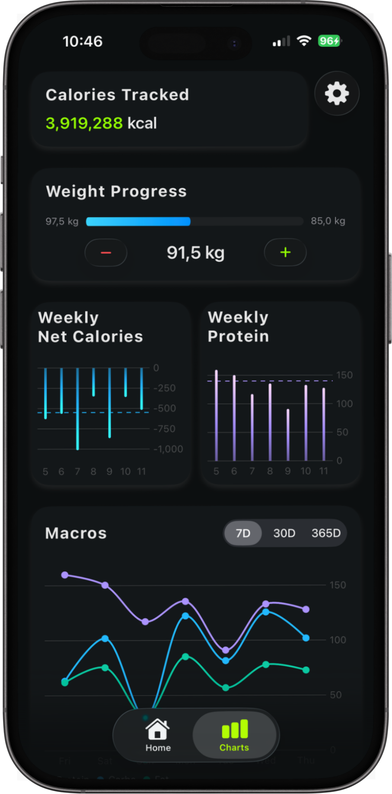
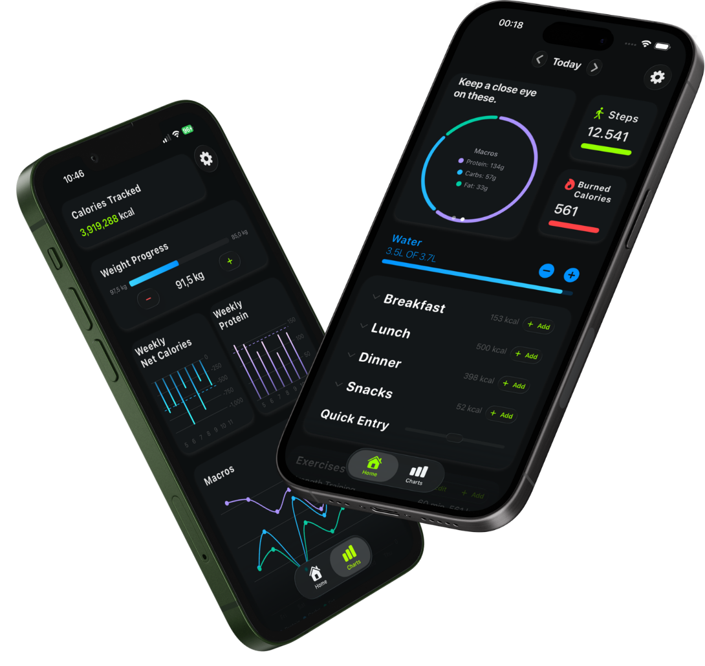
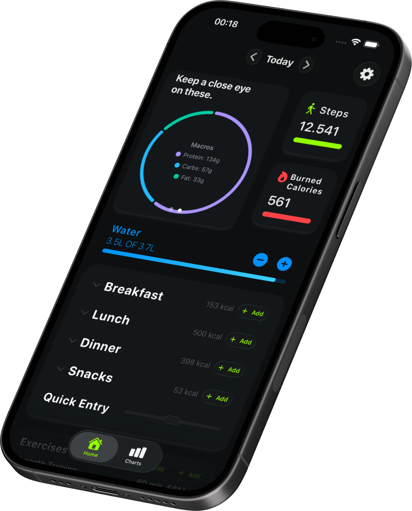
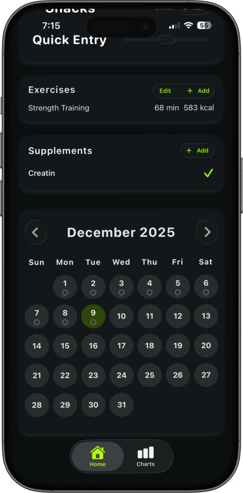
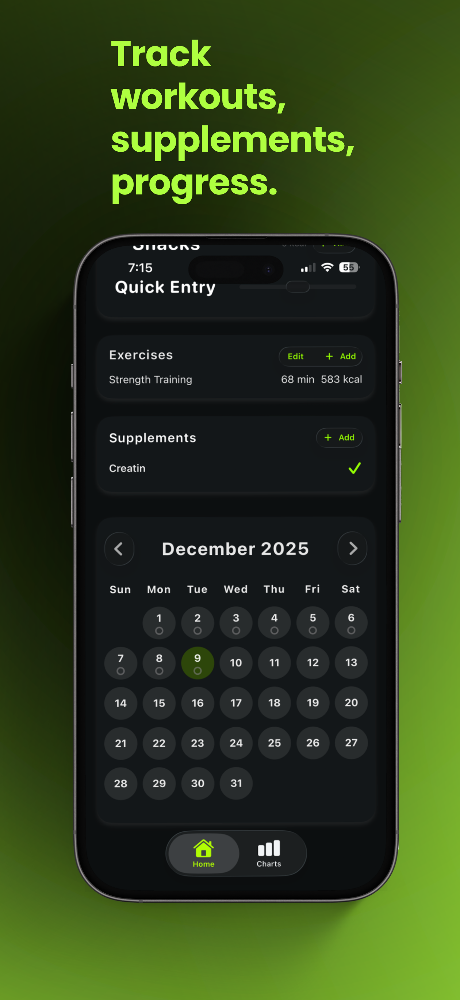
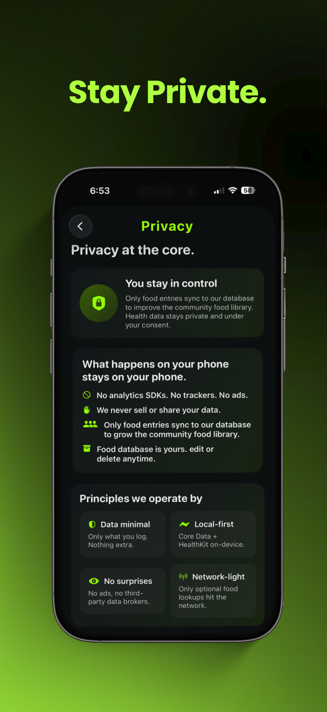

01 / Track
One dashboard for the current day.
The main screen combines calories, macros, water, HealthKit activity, meals, workouts, and supplements. It acts as both the daily summary and the starting point for most updates.

01 / IOS PRODUCT
Nutrition, training, and progress
in one native iOS app.
SWIFT SWIFTUI CORE DATA

[001]
IGNITE combines daily nutrition, water, workouts, supplements, activity, and body metrics in one app. Most user data is stored on-device, while network access is limited to food lookup and foods deliberately submitted to the community database.
[002]
Daily workflow
The dashboard is the main working view. It shows calories, macros, water, activity, meals, workouts, and supplements together so common updates can be made without moving through several separate sections.

[003]
Core product flow
Daily data is entered from the dashboard and food library, then reused in longer-term nutrition, weight, and progress views.
01 / Track
The main screen combines calories, macros, water, HealthKit activity, meals, workouts, and supplements. It acts as both the daily summary and the starting point for most updates.

02 / Add
Food entries can be found through the app’s food library, reviewed with their nutritional values, assigned an amount, and added directly to the current day.

03 / Analyze
Stored daily records are reused in 7-day, 30-day, and 365-day views for calories, protein, macros, weight, and other progress data.

04 / Train
IGNITE also tracks workouts, supplements, activity, and progress. HealthKit provides permissioned activity and body metrics so the daily view is not limited to manually entered nutrition data.


[004]
Data boundary
Nutrition logs, workouts, progress data, profile information, and settings remain on-device. HealthKit data is accessed through Apple’s permission system. The app goes online only for food lookup and community food submission.
[005]
Implementation
The app is written in Swift with a SwiftUI interface. Core Data persists tracking and progress data, UserDefaults stores preferences, and HealthKit supplies permissioned health metrics. OpenFoodFacts and Supabase are the only documented network-facing services.
System boundary
The app is local-first by default. SwiftUI sits on top of local persistence and HealthKit, while only two user-triggered features cross the device boundary.
Application data boundary / documented integrations
[006]
Storage and integrations
Different data has different ownership and storage rules. Tracking data is persisted locally, preferences stay in UserDefaults, HealthKit remains permission-gated, and only food search or explicit community submission uses the network.
Calories, macros, water, supplements, exercises, foods, and custom meals.
Profile information and app settings remain on the device.
Steps, active energy, weight, height, biological sex, and age are read with permission.
Only a barcode or food name is sent for an on-demand lookup.
Foods deliberately submitted to the shared library sync to Supabase.
[007]
Reusable UI patterns
The interface reuses the same interaction patterns across the app: metric cards, progress indicators, expandable meal rows, inline add actions, trend charts, and persistent navigation.
[008]
Engineering decisions
01 / Challenge
Daily tracking, profile data, settings, and health context should not depend on a remote account, but food search still benefits from an external database.
Decision Store user data locally by default, then treat OpenFoodFacts lookup and submitted community foods as explicit network exceptions.
02 / Challenge
Steps, active energy, weight, height, age, and biological sex add useful context, but access needs to remain permission-controlled.
Decision Request only the HealthKit data the app needs and keep access behind Apple’s permission model, with writing disabled unless explicitly enabled.
03 / Challenge
Daily entries need to stay quick, but the same data also has to support weekly, monthly, and yearly analysis.
Decision Keep entry focused on the current day, then surface the stored history separately in 7-day, 30-day, and 365-day views.
[009]
Project scope
IGNITE required more than building individual screens. The project connected interface design, persistent local data, HealthKit permissions, external food data, a shared backend, analytics views, privacy decisions, and App Store distribution into one working iOS product.